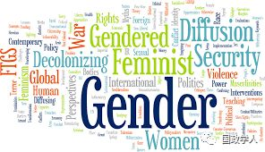

收录于合集

简 介
【作者】 ****
安·唐斯 （Ann Towns），哥德堡大学（University of Gothenburg）政治学教授，瓦伦堡学院（WallenbergAcademy）研究员，著有《妇女与国家：国际社会的规范与等级制度》（ Women and States: Norms and Hierarchies in International Society ）和《性别外交与国际谈判》（ Gendering Diplomacy and International Negotiation ），在 International Organization（IO）、 European Journal of International Relations （ EJIR ） 等期刊上发表多篇文章。
安·唐斯是《国际研究季刊》（International Studies Quarterly）的副主编，也是《剑桥性别与政治研究》（Cambridge Studies in Gender and Politics）、《国际研究评论》（International Studies Review）、《政治与国际政治》（Politics and Internasjonal Politikk）的编委会成员。
【来源】
This is an adapted version of the author’s address on the opening plenary of the annual convention of the European International Studies Association in Prague, Czech Republic, September 2018.
【译者】 Yao ZHANG

Image by CHRISTOPHER DOMBRES
在国际关系学科的诸多领域中，女性主义和性别研究都发展地较为成功。自20世纪90年代女性主义研究在该领域取得重大突破以来，国际关系研究发生了很多变化。目前，关于国际政治中的性别问题有多种强有力的研究议程，这些议程已在该学科中制度化。 International Feminist Journal of Politics 今年将迎来20岁的生日，它将成为许多性别研究的中心平台，这些研究已经在国际关系研究领域内外涌现。 European Journal of International Relations 、 International Political Sociology 与 Security Dialogue 等影响较大的国际关系杂志也在定期发表有关国际政治中性别问题的文章。在主要的国际关系公约中，关于性别的章节、条文的数量令人印象深刻。除了将性别作为国际政治的一个关键问题领域之外，国际关系研究因此更加多样化和更加包容。这是值得庆祝的，也是对国关学科发展感到乐观的理由。
尽管如此，我还是忍不住对国关性别研究的发展感到担忧。 我将努力并恰当地表达这种担忧。因为我很清楚，一个人对学科发展的看法取决于他在该领域的地位。此外，多年来，关于女性主义研究在更广泛的学科中（缺乏）整合。这篇文章提供了一些我认为令人担忧的方面，包括如何将性别融入当代国关研究的趋势的简短思考，以及如何避免在学术分析中掩盖性别因素的三个简单建议。
简单来说，我的担忧是 ： 尽管女性主义/性别研究已经进入了大多数学科会议和出版物的视野， 但过多的国际关系研究却仍然没有关注女性主义，好像性别并不是国际政治的一个基本维度。 问题不在于个别专著或特定作者忽视性别。没有一项研究或一篇学术论文可以涵盖一切。我的研究和其他人一样有限，我当然不会涵盖我所研究问题的所有方面。这不是个别学者或某一学术领域的问题，而是关系到整个研究议程的更普遍方向的问题。举几个例子，太多关于国际地位的追求、外交政策实践、帝国主义和资本主义在全球兴起的研究基本上对性别的重要性只字不提。
我觉得这确实令人费解。性别在人际关系中是如此的重要，以至于很难找到一种制度、过程或关系不是部分性别化的。此外，有很多现成的女性主义研究可以借鉴。 然而，在太多精彩纷呈的研究中，性别似乎无关紧要。实话说，我无法理解。
显然，并不是所有的学术研究都必须始终将性别作为中心。没有什么研究可以囊括一切。 但是，把性别问题单独放在编辑后的一卷书的末尾，让“女性主义学者”或“性别章节”来研究是不够的，就好像性别问题是国际关系中一个与任何人都无关的独特的子领域。为了正确理解国家形成、外交、帝国、革命或资本主义的过程和实践，至少在某些时候，需要将性别分析融入其中。但这种情况很少发生。相反，性别分析往往是分开并行的，似乎只对那些对性别特别感兴趣的人很重要。
我担心性别分析被忽视的现状对国关未来发展的影响。 当如此多的国际关系议程设置学者在不考虑性别的情况下撰写重要议题和过程时，博士生能从中学到什么？如果性别在热门的新研究议程中被忽视，由广泛阅读和获奖的出版物撰写，那么许多学生和其他读者就会得到这样的印象：即性别对全球重大议题与现实的发展并不重要。他们很可能会得出这样的结论：在国际关系研究机构内外蓬勃发展但同时存在的女性主义作品世界中，性别问题几乎没有什么研究的价值。
我还担心，在更广泛的性别研究受到越来越多的攻击之际，女性主义相对于国际关系格格不入的状态会产生什么样的影响。 许多人士（从极右翼民粹主义者到天主教会的保守派，以及以真正科学的名义发表言论的学者）越来越有力地声称，性别研究是一种“意识形态驱动的伪科学”，应该从学术界清除（Kuhar and Paternotte 2017； Lilleslåtten 2018；Redden 2018；Sørum 2018）。世界各地的反性别群体的力量正在壮大，性别研究也在他们的议程上。但是，女性主义学者已经受到威胁：他们不仅对自己的资金来源和制度平台表示恐惧和焦虑，有时还对自己的人身安全表示担忧（Elbied Pettersson 2018； Evans 2019； Redden 2018)。事实上，就在我写这篇文章的时候，一枚假炸弹被放置在瑞典哥德堡大学性别研究秘书处门口（Expressen Dec18, 2018）。在我修改它的时候，瑞典最大的日报（Shachar 2019）的一位专栏作家将性别研究称为“无知的狂热”。在我所在的瑞典，民族主义政党瑞典民主党（SD）的主要科学政策目标是摆脱性别研究（Towns et al .2014；Barkeman 2018）。瑞典民主党的支持者在社交媒体上对性别研究的嘲讽和尖酸刻薄令人震惊。我担心，当性别学科被分割成一个单独的领域时，削减资金和机构支持会变得更容易。而如果性别研究能更多地融入到其他学科中，使性别研究作为研究议程的自然组成部分而合法化，便更容易被接受为国际政治研究的核心内容。

那么，未来的出路是什么呢？ 正如几十年的女性主义理论所证明的那样，研究性别的意义远非不言而喻。对于大多数学者来说，将雄心勃勃的性别研究与分析纳入正在进行的研究议程中实际上是不可行的。然而，所有的学者都可以采取措施来确保他们的工作不是对性别保持沉默，也不是无意中掩盖了性别的相关性。 最后，我将提供三个简单实用的建议，让一个人的文本写作在不同水平上，更具有性别研究的包容性。
1 、敞开心扉进行性别分析最简单的方法就是明确地忽略性别。 明确地忽略性别并不是对性别只字不提。一个更好的选择是尽早明确地认识到分析是片面的。在分析过程中，即使性别与主题相关，也不涉及性别。这样做可以章使对性别的考察“合法化”，并邀请其他学者加入这一行列。人们甚至可以参考女性主义科学哲学家唐娜·哈拉韦（Donna Haraway）与她的经典论文《情境知识》（Situated Knowledges）。这篇文章非常有效地论述了知识生产的政治问题，以及所有学术研究总是而且必然是片面的这一事实。
2 、另一个简单的方法是注意分析中行为个体的性别分类。 当相关的行为体似乎是男性的代名词时，需要用语言表达出来！而不是不加注释地进行，好像这是完全自然的和不值得注意的。如果你花几句话来明确一下这个事实，即使你不分析这个事实，你也会让它变得令人奇怪。因为你在帮助把这个问题变成了一个让国际关系学者产生困惑的合理问题。 另一方面，如果文本写作中没有做到这一点，那就有可能掩盖性别维度，使男性主体自然化，将女性和非二元性别的人从历史中抹去。 举几个例子，如果你写的是1792年法国扩大选举权的国际层面，请不要把这称为“普选”，就好像妇女不存在一样。相反，你可以把它称为男性普选权，或许你可以花上几句话，在法国有关性别和普选权的大量历史学术著作的帮助下，对这一点进行思考。再如，如果你写的是古希腊公民身份的跨国（城邦）维度，请不要把这称为“平等的奇迹”，同时也不要提到奴隶和妇女都没有公民身份。请记住，性别不仅与女性或非二元性别的人群有关。在所有男性互动中，性别同样重要。
3 、一个更有抱负的策略（仍然没有将性别完全纳入分析）是将有限的性别分析编入文本写作中，以此作为背景。 例如，对资本主义国际发展的分析可以花一些时间来讨论性别分工和生育组织。对帝国主义的分析可能会指出某些中心关系的男性化特征，以及这些特征如何有助于巩固帝国制度。然而，即使是性别的部分融合也必然比上面讨论的前两种选择涉及更多的工作。至少，这种策略确实需要阅读和整合一些性别方面的研究。巴里·布赞（Barry Buzan）和拉斯特·舒恩伯格（Laust Schouenborg）合著的《全球国际社会》（ Global International Society , 2018）是对现有女性主义学术研究进行有限整合的很好的例子。部分整合策略的另一个版本是收集和分析一些额外的实证数据。伊弗•诺伊曼（Iver Neumann）的《与外交官在一起》（ At the Home With the Diplomats ） 就是一个很好的例证，这本书将性别问题纳入挪威外交部实证分析的几个维度之一。
还有其他简单的方法可以为纳入性别分析开辟空间。如果你是会议组织者，请确保不要将所有与女性或性别有关的论文自动成单独组成“性别小组”。“试问你自己：这些论文有资格组成一个专门的小组吗？还是它们更适合与其他涉及外交、帝国主义、国家形成、军国主义等论文进行对话？”如果你正在编辑一本书，而不是包括一个单独的关于性别的章节，让其他人摆脱困境，也可以考虑让所有的贡献者在他们的分析中集成一些性别维度。只要稍加努力，许多国际关系中分离和忽略性别僵化的倾向就可以扭转。
** Note**
**1、这是作者于 2018年9月在捷克共和国布拉格举行的欧洲国际研究协会年会开幕式上的讲话的改编本。
**
2、 国政学人微信公众平台 仅以此文呼吁国内外学术同仁关注女性主义的研究与发展！
References
Barkeman, Eva(2018) “Vilken är den viktigaste forskningspolitiska frågan?” (“Which is themost important science policy issue?”) Curie May 8, 2018 athttps://www.tidningencurie.se/nyheter/2018/05/08/vilken-ar-den-viktigaste- forskningspolitiska-fragan-2/
Buzan, Barryand Laust Schouenborg (2018) Global International Society.Cambridge: Cambridge University Press.
ElbiedPetterson, Gabriella (2018) “Genusforskare får ta emot hot och hat” (Genderscholars receive threats and hatred) Göteborgsposten Dec 18,2018 at http://www.gp.se/nyheter/g%C3%B6teborg/genusforskare-f%C3%A5r-ta-emot-hot-och- hat-1.11890846
Expressen (2018)”Misstänkt bomb vid universitetsbyggnad” (”Suspected bomb at universitybuilding” Expressen Dec 18, 2018 at https://www.expressen.se/gt/just-nu-misstankt-farligt-foremal-stor- polisinsats/
Evans,Jennifer (2019) ”The new war on gender studies” The Conversation Jan6, 2019 at http://theconversation.com/the-new-war-on-gender- studies-109109Haraway,Donna (1988) “Situated Knowledges: and the Science Question in Feminism and thePrivilege of Partial Perspective” Feminist Studies 14(3):575-599.
Kuhar, Romanand David Paternotte, eds (2017) Anti-Gender Campaigns in Europe.Mobilizing Against Equality. London: Rowman & Littlefield.
Lilleslåtten,Mari (2018) “European gender scholars unite in resistance against right-wingattacks” Kilden. Genderresearch.no Nov 19, 2018 at http://kjonnsforskning.no/en/2018/11/european-gender-scholars-unite
Matthews,David (2018) “Gender Studies Under Threat Worldwide, Says SubjectPioneer” Times Higher Education Dec 4, 2018 at https://www.timeshighereducation.com/news/gender-studies-under-threat- worldwide-says-subject-pioneer
Neumann, Iver(2012) At Home with the Diplomats. Ithaca: Cornell UniversityPress.
Redden,Elizabeth (2018) “Global Attack on Gender Studies” Inside Higher Ed Dec5, 2018 at https://www.insidehighered.com/news/2018/12/05/gender-studies- scholars-say-field-coming-under-attack-many-countries-around-globe
Shachar,Nathan (2019) “Slutreplik: Foucault och Said var inga befriare” (”Final word:Foucault and Said were no liberators” Dagens Nyheter 2019-01-31athttps://www.dn.se/kultur-noje/slutreplik-foucault-och-said-var- inga- befriare/?fbclid=IwAR3t0oozinh94edwg-x98eZa-e8VoxFslEa7PLquwA6xIJwkL40VPoyiubs
Sørum,Benedicte (2018) “Taking up the fight against right-wing populism: “We mustkeep gender in EU research” Kifinfo Dec 3, 2018 at http://kifinfo.no/en/2018/11/taking-fight-against-right-wing-populism-we-must- keep-gender-eu- research?fbclid=IwAR0BawfgeLrlsXwMiOQAK1pTw_fXEtMxTj9-CTURtvPtLVgfZDPiLnz7Q_c
Towns, Ann,Erika Karlsson and Joshua Eyre (2014) ”The equality conundrum: Gender andnation in the ideology of the Sweden Democrats” Party Politics 20(2):237-247.
本文由国政学人微信公众平台编译首发
更多阅读
国政学人 （ID：guozhengxueren)
为方便学人及时阅读高质量文章
别忘把国政学人设置 星标 哦~